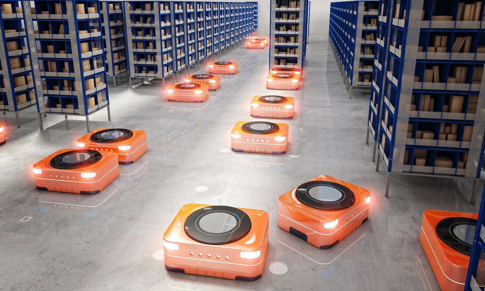
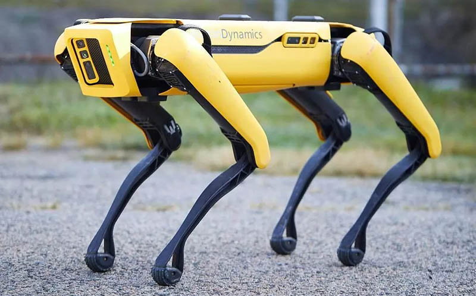
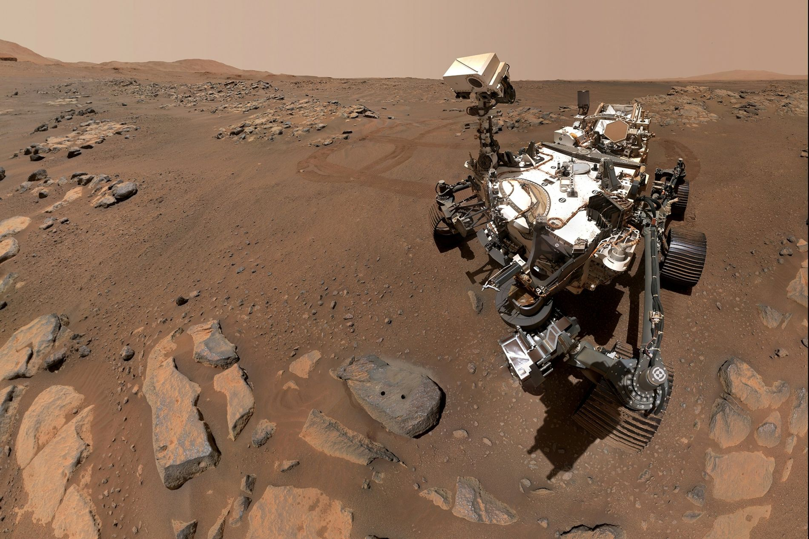
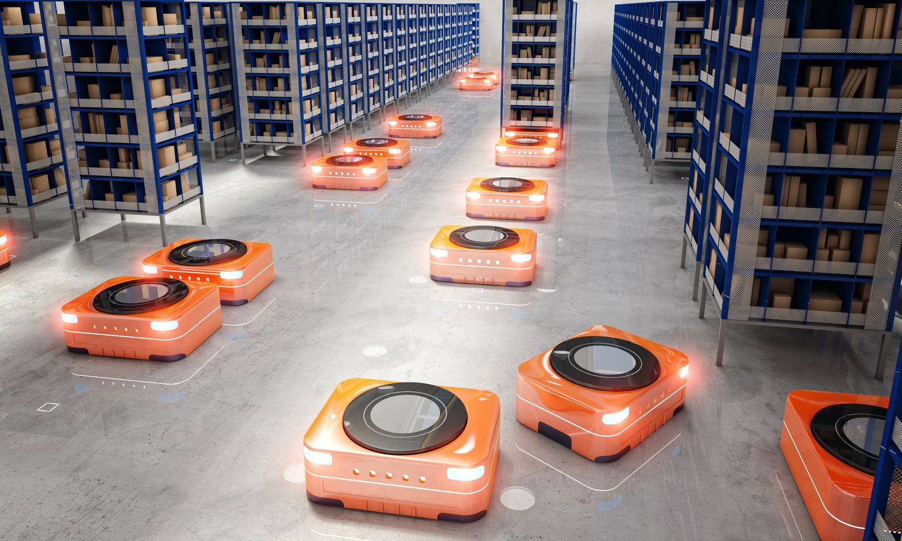
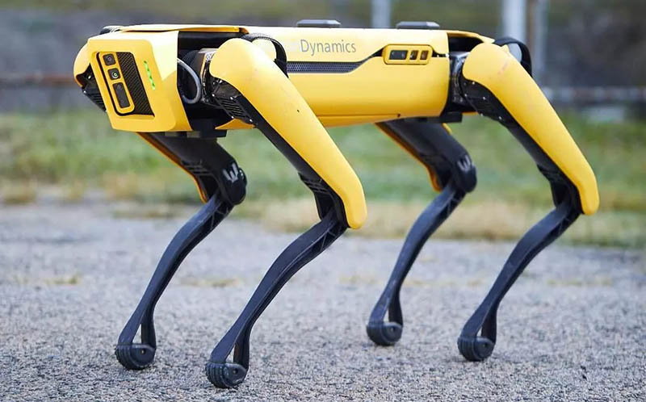
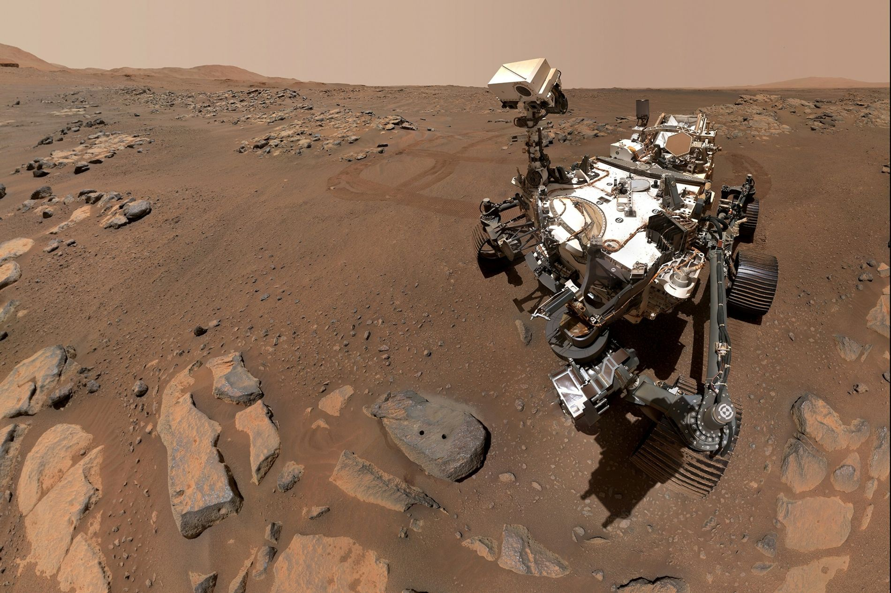

-Ingeniero en Electrónica y Automatización
El Ingeniero en Electrónica y Automatización posee las competencias para analizar, modelar y
resolver problemas de ingeniería, que le
permiten diseñar e integrar procesos, sistemas electrónicos, sistemas de control retroalimentados
(continuos y discretos), de
instrumentación, de robótica y de automatización que cumplan con especificaciones deseadas, así como
instalarlos y ponerlos en
funcionamiento cuidando el impacto social, económico y tecnológico.
https://www.fime.uanl.mx/acreditacion-iea/